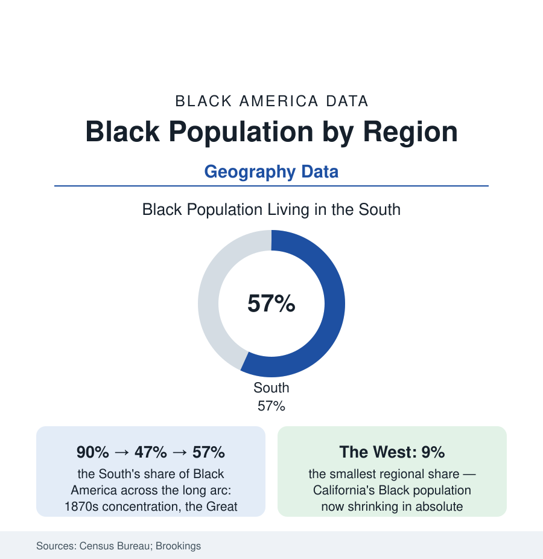

Black Census
Black Population by Region: The South Holds the Majority Again
About 57% of Black Americans live in the South — a majority restored after a century of dispersal. The regional distribution data, and the flows still running.

The single most important geographic fact about Black America is a restoration: about fifty-seven percent of Black Americans live in the South — a majority the region lost across the Great Migration's middle decades and regained, state by state and suburb by suburb, over the last fifty years. The regional distribution (South 57%, Midwest 17%, Northeast 17%, West 9% in the recent ACS estimates) is not a static map but a set of flows still running — toward Atlanta, Houston, Charlotte, and the Florida metros; out of the historic Northern capitals; into the West's newer nodes. This article reads the regions.
The Long Arc: Concentration, Dispersal, Return
The series across fifteen censuses draws a U: in 1870 roughly ninety percent of Black Americans lived in the South, most of them rurally; by 1970 the share bottomed near forty-seven percent, the Migration having built the Northern and Western Black metropolises of the cities section; from 1970 forward the line climbs without interruption — the 'return migration' or New Great Migration of the scholarship (the demographers' reversal finding of the 1970s onward: net Black migration to the South positive in every decade since, growing through the 1990s and 2000s) — driven by the college-educated and the retiring in the flow data's two-humped shape, by the Sun Belt economy and the kinship map (the returnees disproportionately to states and counties their grandparents left, the genealogical geography the survey data keep confirming), and by the housing arithmetic (the suburbanization file's Southern frontier). The result by 2020: the South holding not only the majority but the growth — nine of the ten fastest-growing large Black populations in Southern metros in the Brookings tabulations, the Black population's center of gravity (the Census Bureau's mean-center calculation) sitting in northern Alabama and drifting, decade by decade, back toward the Black Belt it left.
The Regions in Profile
The South's own distribution concentrates in the Texas-to-Virginia corridor and the Deep South's Black Belt (the state profiles of this section: the Carolinas and Georgia above a million Black residents each in the big-state tier; Mississippi and Alabama the highest shares; Texas and Florida the largest absolute counts after Georgia's). The Northeast's 17% is a two-metro fact (New York and Philadelphia holding the bulk, their Black populations' recent trend the out-migration data's negative sign — the region's total roughly flat as its Southern flows run). The Midwest's 17% is the industrial archipelago (Chicago, Detroit, Cleveland, Milwaukee, St. Louis — the first-Migration capitals whose recent data run flat-to-declining, against the region's growth exceptions in Columbus, Indianapolis, and Minneapolis's suburban ring). The West's 9% is the file's surprise: the smallest share and, in California, an outright decline in the recent intercensal estimates (the Los Angeles and Bay Area Black populations shrinking in absolute terms — the displacement file's endpoint — even as Las Vegas, Phoenix, and the Texas-adjacent West grow), a regional reshuffle inside the Western total.
What the Flows Carry
Migration is never only people: the flow data carry the return's cargo — the college graduates (the South's share of Black degree-holders rising steadily in the attainment file), the retirees' Social Security geography (the pension income following the return — an economic transfer the regional accounts register), the political arithmetic (the population shifts' slow redrawing of the electoral map, an apolitical fact of reapportionment whatever its consequences), the church and family infrastructure's re-thickening (the returnees rejoining the grandmothers' counties of the caregiving file), and the culture's center moving with the count (the music, food, and media industries' Southern re-centering of the last three decades tracking the demography almost exactly). The counterflows matter in the same data: the young-adult North-and-West moves for the tech and creative economies (the states' age-specific migration tables), the Caribbean and African arrivals re-weighting the Northeast and South Florida and Houston (the foreign-born file's ports), and the displacement flows inside metros (the regional totals masking city-to-suburb churn the suburbanization file owns).
Reading the Regional Data
Ninety, forty-seven, fifty-seven: three numbers containing the whole modern Black geographic story — a people rooted, a people scattered by design and danger, a people choosing, across two generations and counting, to come home in the majority again. The census will keep redrawing this map every ten years. The trend line's direction is the fifty-year story, and it points, still, South.
More in Black Census
The Black Population of the United States: Size, Definitions, and Distribution
The Black population of the United States totals 52.8 million — 15.4 percent of the nation. How the Census Bureau defines and counts the population, and where it lives.
Black Median Household Income in the United States
Black median household income stands at $56,490 in the Census Bureau's annual income report — how the figure is measured, how it compares, and what drives it.
The Black Poverty Rate: Levels, Children, and the Long Trend
The official Black poverty rate is 17.1 percent — against 11.1 percent nationally and 7.7 percent for non-Hispanic White Americans. How poverty is measured and what the data show.
Source: U.S. Census Bureau, 2020 Census and American Community Survey; Brookings Institution demographic analyses; University of Michigan Population Studies Center migration research.